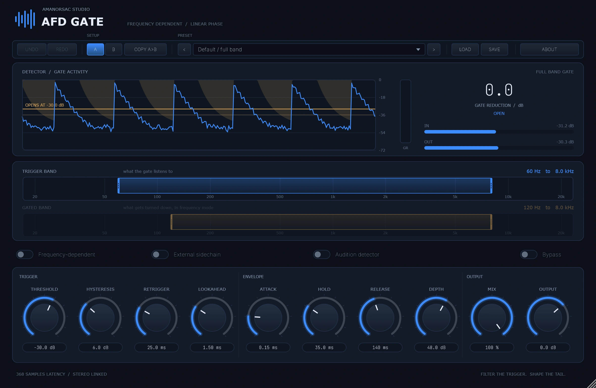
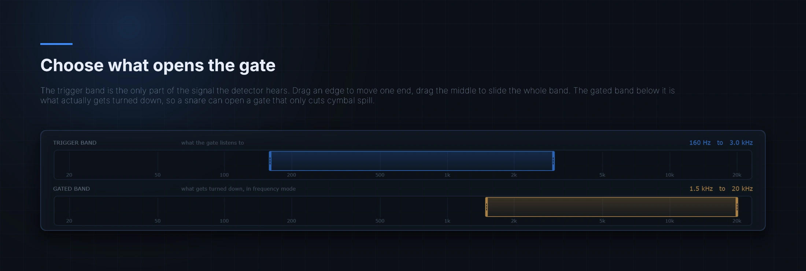
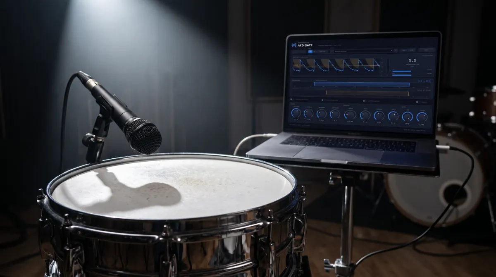
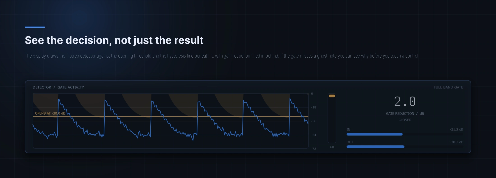
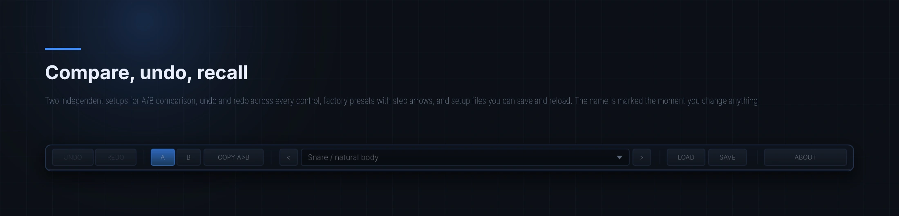
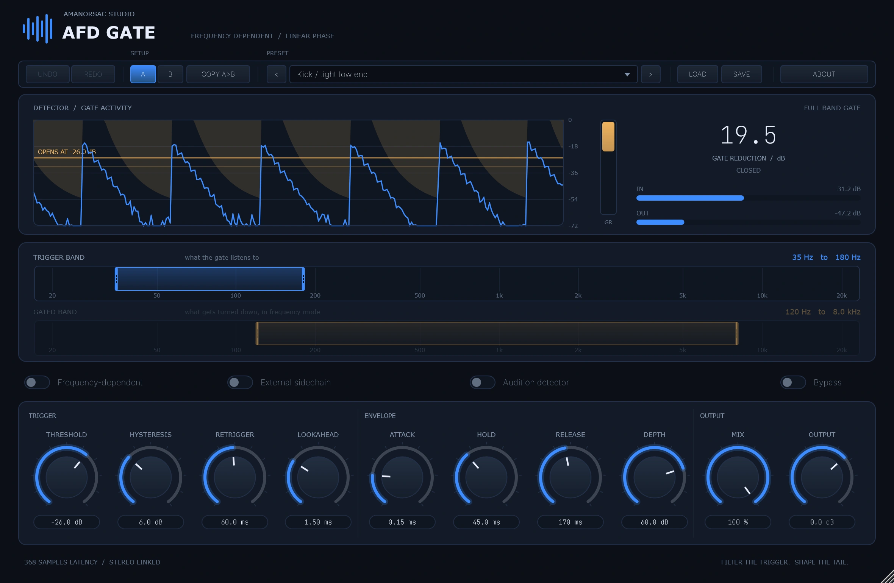
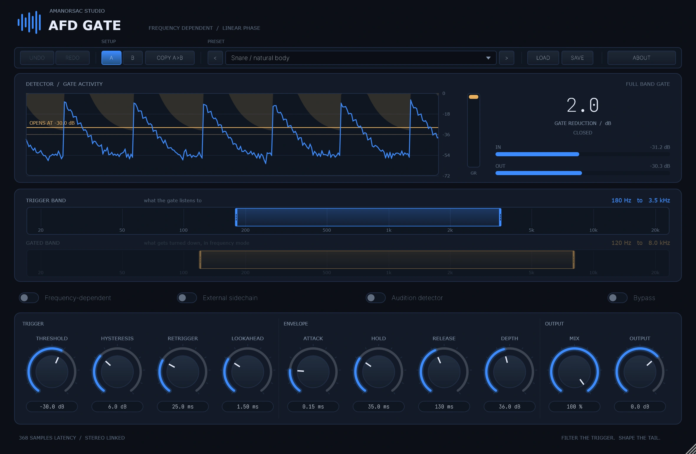
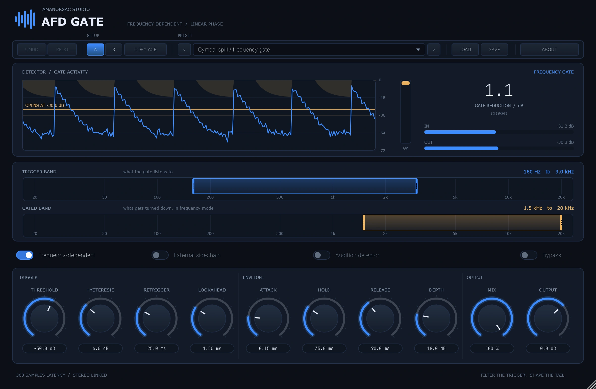

VST3 and Standalone · Windows and macOS · Linear Phase
AFD Gate
Filter the trigger. Shape the tail.
AFD Gate, the Amanorsac Frequency Dependent Gate, is a linear-phase gate for close-miked drums. You choose which part of the sound opens the gate, and which part gets turned down, so a snare hit can open a gate that only cuts the cymbal wash above it.
$12 once · version 1.3.0 · runs offline with no activation, ever

A Gate That Knows Which Drum It Is On
Most gates make their decision using the whole signal, and then turn down the whole signal. On a close-miked kit that is the wrong tool for the job. The snare mic hears the hi-hats and the tom mics hear everything. A gate that ducks the whole channel takes the room with it, and you end up with a kit that sounds assembled rather than played.
AFD Gate splits those two decisions apart. One band decides when the gate opens. A different band decides what gets turned down. So a snare can open a gate that only cuts the cymbal wash, and the body of the snare never moves.

Trigger
Choose What Opens the Gate
The trigger band is the only part of the signal the detector hears. Drag an edge to move one end, drag the middle to slide the whole band, and double-click to reset it. The gated band underneath is the part that actually gets turned down, so you can set a gate that opens on the snare and only cuts the spill above it.


Detector
See the Decision, Not Just the Result
The display draws the filtered detector signal against the opening threshold, with the hysteresis line underneath and the gain reduction filled in behind. If the gate misses a ghost note, you can see why before you touch a single control.

An Envelope That Behaves
Attack and release are smoothed in decibels, so a release falls evenly from the start of the tail to the end instead of collapsing at the front. Hold bridges the gaps between hits, hysteresis stops chatter at the threshold, and retrigger lockout stops buzz and wash from flapping the gate.
Lookahead for Free
Lookahead delays the detector less than the audio, so the gate is already open when a transient lands. The latency reported to your DAW does not change when you change the setting.
Trigger From Anywhere
An external sidechain input can take the decision from another track, and it falls back to the track's own signal when nothing is connected. You can also listen to the filtered detector on its own to check exactly what it is hearing.

Compare, Undo and Recall
You get two independent setups for A and B comparisons, undo and redo across every control, factory presets with step arrows and setup files on disk. The preset name is marked the moment you change anything, so you always know whether you are still on it.
On the Kit
One Plug-in, Three Jobs
AFD Gate comes with seven factory presets for the kick, snare, toms, cymbal spill and the rest, each with the bands already in a sensible place. Step through them with the arrows without letting go of the mouse. Here is what it looks like once it is working.

Kick
The trigger band sits down where the beater is, and everything above it is ignored by the detector.

Snare
The natural body of the drum, with the hysteresis line holding the gate open through the ring.

Cymbal Spill
In frequency mode the snare opens the gate, and only the band above it is turned down.
No Activation, No Account
Once AFD Gate is yours it simply runs. There is no key to type, no server to reach and nothing phoning home. You buy it here because this is where the download lives, not because the plug-in will ever ask who you are. Install it on every computer you own.
Tech Specs
Formats
VST3 and standalone, on Windows x64 and macOS.
Channels
Mono or linked stereo, with an optional stereo sidechain input.
Latency
128 samples of band split group delay plus 5 ms, reported to the host.
Detector
Two pole band-pass, 12 dB per octave each side, 20 Hz to 20 kHz.
Band Split
257 tap Blackman windowed linear-phase complementary pair. Rebuilds the input exactly when the gate is open at unity.
Sample Rates
Tested at 44.1, 48, 96 and 192 kHz.
Threshold
-72 to 0 dBFS. Depth 0 to 80 dB.
Envelope
Attack 0.01 to 30 ms, hold 0 to 250 ms, release 5 to 1500 ms.
Lookahead
0 to 5 ms, with no change to reported latency.
Interface
Resizable. The size is saved with the session.
Validation
Passes pluginval at strictness level 10 with no warnings.
Network
None. Runs offline, with no telemetry and no activation.
Questions
What does linear phase actually give me here?
What is the difference between the trigger band and the gated band?
Does it add latency?
Does it need the internet or a licence key?
Windows or Mac?
Windows says it protected my PC. Is something wrong?
AFD Gate
$12
Bought once, and that is all. VST3 and standalone for Windows and macOS, with no activation and no account needed to run it. It is also part of the Studio Bundle.